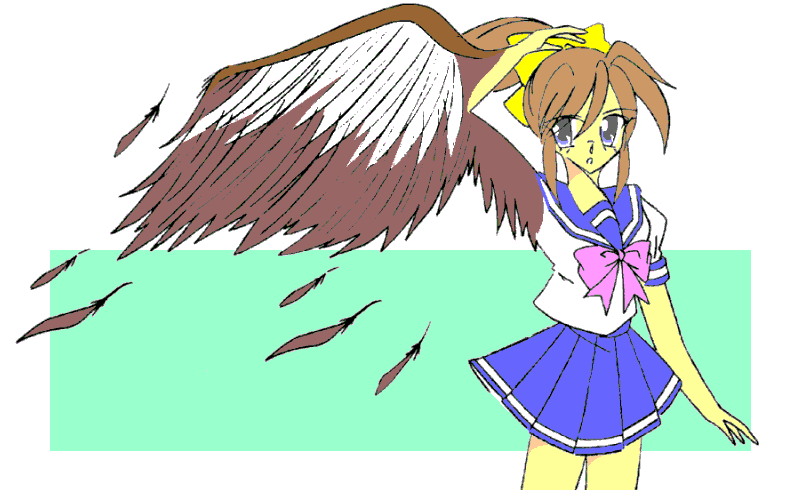

「我が名はルコ……六武衆がひとり」
「六武衆？」
太古の戦の名残なのか、セーラを前に自らの名を告げるファルコンアマッドネス。おそらくは武功争い……自分の功績をはっきりさせるために名乗りを上げていたのだろう。
「…………」
また知らない単語が出てきた。セーラは顔はルコに向けたまま、瞳だけを動かし、従者に情報を求めた。
しかし、キャロルも初めてまみえるアマッドネス。だがそれも当然……かつてのミュスアシ侵攻をめぐってクィーンと対立した大賢者スズによって、六武衆はすべて打ち倒されている。
余談ではあるが、それが太古、アマッドネスが神聖都市ミュスアシで壊滅した原因のひとつでもあった。
それまでの闘いで、優秀な軍師である将軍ガラと六武衆の存在はそれだけ大きかったのだ。ミュスアシ戦の前に彼等を失ったアマッドネスは、戦闘集団としての統率がきちんと取れなかったために、戦乙女たちに各個撃破されて敗れ去り、封印されることになったのである。
クィーンアマッドネス・ロゼはこの段階で他のアマッドネスを蘇生させる術を得ていたが、それには多くの時間や手間を要した。
ましてや強力なアマッドネスならばなおのこと……その間に敵に堅固な陣を張られてしまうわけにはいかず、また、神に祈り続けるだけの都市と侮っていたこともあって、彼女は六武衆の復活を見送り、侵攻を優先した。
しかし結果として全軍を失い、そしてクイーン自らも長きに渡る封印をされる羽目になったのである……
戦乙女セーラ Ｖｏｌ．６
作：城弾
「……！？ こいつは――」
空の散歩（兼偵察）としゃれ込んでいたウォーレンは、以前にも捉えたファルコンアマッドネスの気配を察知して、翼をひるがえした。
戦乙女たちは、概ね三キロ四方のアマッドネスの「波動」を感じることができるが、彼女たちをサポートするために生み出された人工生命体であるキャロル、ドーベル、そしてウォーレンは、さらに広範囲をサーチすることも可能である。
ましてや強敵と思えるファルコンアマッドネス……当然、意識もしていた。
ほどなくして、ウォーレンは現場に到着した。
「ちっ、二体かよ……でもセーラに気を取られて、こっちには気づいてないみたいだな……」
遠距離からアマッドネスたちと、それと対峙するセーラを確認したウォーレンは、すかさずその場を離脱した。
既に連絡をとり合っていた彼の主、射抜く戦乙女ジャンスに変身する押川 順と合流するためである……
−ＥＰＩＳＯＤＥ２１「強敵」−
「私に与えられた任務は仲間の援護、そしてセーラ――貴様を殺すことだ！」
ファルコンアマッドネスはそう宣言すると、羽根の一枚を抜き、それを手裏剣のように放った。
「おっと！！」
かわし切れずに、ガントレットでそれを受けるセーラ。そのわずかな隙を初めから狙っていたファルコンアマッドネスは、すかさず襲い掛かった。
「死ねぇっ、セーラっ！！」
凄まじいスピードで剣が振り下ろされる。セーラはそこに、闘志よりも憎悪を感じ取った。
（何？ コイツ？ なんでこんなに……まさかコイツもヒトデみたく、過去に因縁があるっていうの！？）
初対面なのに、ファルコンアマッドネスは憎悪をみなぎらせている。
しかし疑問を解く暇などなかった。矢継ぎ早に攻撃を繰り出され、かわしたり防いだりするので手一杯だ。
「早く去れっ！ こいつの相手は私だっ！！」
「わ、わかった……」
セーラに対して苦手意識を持つシースターアマッドネスは、その言葉にすかさず逃げ出した。
「あっ、待て！」
「どこを見ているセーラっ！ お前の相手は……この私だと言ったはずっ！！」
ますます剣のスピードを上げてくるファルコンアマッドネス。だが、その太刀筋は徐々に大振りに……雑になっていく。
「このっ」
スピードが乗り切る前にガントレットで受け止めて、ファルコンアマッドネスを突き飛ばすセーラ。
飛行タイプ（鳥形）アマッドネスの宿命で身体が軽いから、パワー負けするファルコンアマッドネスだった。
そのころ押川順は、ウォーレンが変形したバイクで、セーラとファルコンアマッドネスが闘っている場所を目指していた。
近くの公園で間合いを取るセーラとファルコンアマッドネス。互いの息が荒い。
「この憎悪、半端じゃないわ。どうして？ 初対面なのに……もっともあたしは前世でも今でも、かなりの数のアマッドネスを倒してきた。憎まれても当然だけど」
「そんなことじゃない……お前は私の大事なものを奪おうとしている……だから許せない……殺してやるっ」
「はぁ？」
ファルコンアマッドネスの力まかせな攻撃をかわし、受け流しながらも、セーラは戸惑う。
（コイツの仲のよかったアマッドネスを倒して、その敵と狙われているのかしら？）
そう解釈したセーラ。しかし全くの的外れ。
野川友紀の肉体を依代として復活したファルコンアマッドネス――ルコは、友紀が抱いた嫉妬の心をとり憑く媒体にしている。そして、友紀の嫉妬の対象は、目の前にいるセーラ本人なのだ。
セーラ＝清良だと知らない友紀にとって、セーラは自分と清良の間に割り込んできた、いわば「恋敵（友紀に明確な自覚はないが）」。その嫉妬心をエネルギーにしているから、ファルコンアマッドネスの攻撃は激しく熱い。
そしてこれまでのアマッドネスと違って、ルコは友紀と意識を分離させている。セーラ＝清良が友紀に知れれば、ルコは友紀の体を使うことができなくなる。彼女に自分の持つ情報が伝わってはいけない。
それでも嫉妬心だけは混ざり合っている……友紀の嫉妬、ルコの同胞の敵という意識が混ざり合い、セーラに対する殺意という形になっているのだ。
「……！」
遠くからパトカーのサイレンの音が聞こえてきた。
シースターアマッドネスの出現が通報され、いくら三田村（アマッドネスの将軍ガラと肉体を共有している警察幹部）が警視庁で権力を持っていても、市民からの１１０番通報を無視するような指示は出せない。
「騒がしくなってきたな……どうだ？ あっちで続けないか？」
上空を指し示すファルコンアマッドネス。
「…………」
敵のテリトリーである空中。迷うのも無理はない。だが――
「わかったわ。空なら誰にも迷惑は掛からないし」
「ふっ、ならば来いっ」
ファルコンアマッドネスは翼を広げ、一気に空へと駆け上がる。
「セーラ様、敵の誘いに乗ることはないのでは？」
「でも、このまま逃げてもたぶん奴は襲ってくる。それなら空で決着をつけた方がマシよ」
そう答えると、セーラは右手の赤いガントレットを叩いた。体操着が陽炎のように揺らめき、レオタードに変化した。
初めてのころから比べると、「魔力の鎧」の再構成が早くなっている。
背中に妖精の翅を広げ、セーラも空へと舞い上がった。
空中で向かい合う、セーラとファルコンアマッドネス。
「喜べ……太陽の下で葬ってやるっ」
「あんたこそ地面に叩き落してやるわっ」
いきなり現れて、自分に憎悪を叩きつけてくるファルコンアマッドネス。つられたわけでもないが、セーラも怒りをたぎらせる。
だが、空中ではフェアリーフォーム限定となるセーラ。エンジェルフォームの防御力、ヴァルキリーフォームの運動性、マーメイドフォームの耐久力とパワーを生かすことは難しい。
それでも敵が空を選んだ以上、ここが戦場だ。
「食らえっ！！ セーラっ！！」
ファルコンアマッドネスは羽根をナイフのように投げつけてきた。それがゴングだった。
二本同時の攻撃、左右どちらにも避けにくい。
普通なら上か下……だが、セーラは真っ直ぐファルコンに肉薄した。
間合いを詰めるセーラ。だが、それはファルコンアマッドネスの予想の範疇だった。
引きつけて右手の剣を振る……と、見せかけ、左手の爪で素早くセーラの胸元を凪ぐ。
「きゃっ！！」
精神が完全に女性のそれになっていたセーラは、闘いの場にはおよそ不似合いな可愛い悲鳴を上げて後退した。
そこに追い討ちとばかりに、ファルコンの蹴りが見舞われる。
すべてはこの攻撃のための布石。避けきれず、セーラはわき腹にその攻撃をまともに食らう。
「ぐうぅっ……」
セーラの胴回りは、戦う肉体のせいか引き締まっていて脂肪が薄い。そのためダメージが緩衝されず、肋骨にもろに響いた。
息が詰まり、呼吸困難に陥る……動きの止まったところに、ファルコンアマッドネスが脳天から剣を振り落とす。
だが空中の闘いには、「下」という逃げ道がある。セーラは瞬時にルコの足よりも低い位置に下がって剣をかわす。
そして、生じた好機を逃さない。
「ライトニングハンマー Λ（ラムダ）っ！！」
フェアリーフォームの時の脚力を生かして全身で見舞うキック、ライトニングハンマー――雷の鉄槌。
基本は脳天目掛けての空中からのキックか、ジャンプしてのオーバーヘッドキック。こちらは「ライトニングハンマーＶ」。つまり足の動く方向のイメージでそう呼称されている。
「ラムダ」は逆に下から上への攻撃。本来なら空のジャンプで、降りる時に攻撃するのだが、そのジャンプそのもので蹴りを見舞う。
しかしこちらも下がった分だけやや届かず、ファルコンアマッドネスの腹部をかすっただけに留まった。
「きっ、貴様あっ……」
「おあいこでしょっ！ 胸とかお腹とか、女の子の大事なところばっかり狙ったあんたの方がよっぽど性質が悪いわよっ！」
憎悪をぶつけ合う二人の女。しかし、それは本来なら仲のよい幼なじみの少年と少女。
互いに姿を変え、戦場で拳を交えているとは思いもよらない……知っているのはルコ自身とアヌ、そしてガラだけだ。
「いたぜジャンス。……空だ」
主を呼び捨てにするウォーレンだが、順は気にした様子もなく上を見上げた。
「アレがハヤブサのアマッドネス……戦っているのはセーラさんってこと？」
セーラとジャンス――前世はともかく、今の両者に面識はない。順にしても、自分のエリアでの戦いが主で、セーラの援軍までは手が回らない。
「今ならやれるんじゃねぇか？」
ウォーレンもそこらあたりは理解していてるのか、言葉を投げかける。
「ぎりぎりだけど、ここなら察知されないかな……」
バイクに跨がったまま、順はジャンスに変身、そしてキャストオフ、さらに超変身。
「待っててねぇ〜セーラさ〜んっ、今助けてあげるからぁ〜」
心にもないことをつぶやき、銃を構えて狙いを定め、ジャンスはトリガーを引いた。
「何っ！？」
「飛び道具？ キャロル、もしかして――」
いきなりアウトレンジから攻撃されて、セーラとファルコンアマッドネスは咄嗟に間合いを取った。
（間違いありません、ジャンス様です。ウォーレンの気配も感じます。でもそこから５００メートル以上ありますから、セーラ様には確認できないかと）
「そんな先から狙撃できるの？」
いくら的が大きいといえど、ここまで狙い打てる精度の方が驚異的だ。
「あっちゃ〜、そう動くならもっと早く動きなさいよ〜」
勝手なことをつぶやくジャンス。ジャンパースカート姿は彼女のエンジェルフォームである。
「もう無理ね……とりあえず逃げるわよっ、ウォーレン」
「承知」
バイクモードのウォーレンはジャンスを乗せたまま猛然と走り出し、その場から離脱した。
彼女が逃げたのは、ファルコンアマッドネスの逆襲を避けたというより、一緒に狙い打ったセーラが怒るのを嫌ってである。
「くっ……なるほど、こっちの隙をついて連絡を取り合っていたらしいな」
「知らないわよっ！ あれが勝手にやったことなんてっ！」
どこか侮蔑を含んだ言い方をするファルコンアマッドネスに、律儀に否定するセーラ。
「何を恥じ入る必要がある？ 敵を倒すためにどんな手段でも使えばいい……それでこそ殺し甲斐がある」
言葉とは裏腹に、ファルコンアマッドネスは小刻みに動き回って標的になるのを避けている。
この距離では、ジャンスの気配を察知できない。「まあいい……今日のところは挨拶代わり、いずれまたお前を殺しに来よう。恐怖に震えて眠ればいい……それが報いだ」
それだけ言うと、ファルコンアマッドネスは翼を羽ばたかせた。
「あっ……」
羽根吹雪がその姿を覆い隠し、彼女はセーラの目前から消え去った。
「…………」
アウトレンジから攻撃してくるのを警戒していたセーラだが、本当にいなくなったらしいと思い、とりあえず緊張感を解いた。
ファルコンアマッドネスは元の場所に人気がないのを確認してから着地して、そして友紀の姿に戻った。
ルコの意識が眠りにつき、友紀の意識が目覚める。
「あれ？ あたし、今なにしてたの？ それに――」
誰かとケンカしていた気が……そんな思いが頭をよぎった。
嫉妬心が不可欠なため、意識の一部はルコと繋がっている。つまり、朧気に戦っていた記憶が「夢」のように残っているのだ。
「やだ？ 立ったまま寝てたの？」
友紀は怪訝な表情を浮かべながら、家路に着いた。
そして帰宅するなりベッドに倒れこみ、夕食まで眠ってしまう。当然だが、戦闘の激しい疲労が原因である。
一方、セーラはそのまま女の子姿で家に帰った。既に家族に受け入れられているので、気楽なものだ。
部屋に入ると、服をゆったりしたＡラインのワンピースに変化させ、そのままベッドに転がった。
「ああんもうっ、何よあいつっ！ ワケわかんないっ」
明らかに個人的な恨みに思えた、ファルコンアマッドネスの襲撃。しかし、それが何を意味しているのかセーラにはわからない。
「もしかすると、依代にされた人物の方に、何か遺恨でもあるのではないでしょうか？」
「それだとなおさら相手がわかんないかも……」
キャロルの推理に、セーラは投げやりに答えた。
何しろ「ケンカ番長」の清良である。恨んでいる相手を特定するのは難しかった。
「せいら、お風呂入っちゃって」
「は〜い」
母親に階下から声をかけられ、女の子姿のまま浴室に向かうセーラ。
「セーラお姉ちゃん。あたしも一緒に入っていい？」
「いいも何も、もうほとんど脱いじゃてるじゃない……あたし、正体はあなたのお兄ちゃんなのよ。それでもいいの？」
「だってそうは見えないもん……どう見てもお姉ちゃんだし」
「はあ……わかったわよ。一緒に入ろ」
「わーい」
押しきられる形で、セーラは妹の理恵と一緒にお風呂に入った。
「うわぁ、本当に女の子なんだぁ。それにお肌すべすべ……本当に元はおにいちゃんなの？ 二人いて、あたしのことからかってない？」
「そんなわけないでしょ」
今は女同士、姉と妹。セーラの口調も自然と女らしくなっていく。
「ねぇ、理恵ちゃん」
「なぁに？ セーラお姉ちゃん」
「自分に覚えがなくても、誰かに激しく憎まれることってあるのかしら？」
「あるんじゃないかな？ 誤解とか、ただ単に友だちの彼氏と授業のこと話してただけなのに、それを勘違いされたりとか」
「勘違い、ねぇ……」
セーラが気にしていたのは、ファルコンアマッドネスの激しい憎悪。
どう見ても、「同胞の敵」というだけではない。個人的な恨みがある……といった感じだった。
前世で対峙していないのであれば、とり憑かれた相手がこっちを憎悪している可能性の方が高い。ましてや殺意まで抱かれているとなると、さすがに気にせずにはいられない。
「でも、勘違いならそのうちわかってくれるんじゃない？ だからお姉ちゃんまで感情的になっちゃだめだよ」
「うん。ありがと、理恵ちゃん」
口でこそ笑っているが、セーラは自分の中にある憎悪を自覚していた。
（あたしの中にも、アマッドネスたちと同じ黒い感情が……大昔の戦いで犠牲になったあたしたちを、神官たちは「女神」と讃えたって聞いたけど……こんな感情を抱くなんて、とてもじゃないけど――）
「うーん、なんか暗いなぁ……えいっ、くすぐり攻撃っ」
「ちょっ、ちょっとやめてっ、理恵ちゃん……あんっ、くすぐったい……きゃははははっ。……あっ、だめっ、そ、そんなとこ――」
自分がとことん女の肉体を有していると思い知らされた、セーラであった。
些細な誤解から付け込まれ、幼なじみ同士で殺し合う。
そんな事態に陥っているとは、夢にも思わない清良と友紀であった……
商店街。本来なら人でごった返すはずのそこには、今は誰もいない。みんな逃げてしまった。
唯一そこにいるのは一人の少女。体操服姿で、今時ブルマである。
目を引くのが両の腕を覆う腕甲。右腕には夕日のように赤い、左腕には海のように青いガントレットを装着している。
「…………」
対峙するのはヒトデの異形、シースターアマッドネス。商店街に出現し、人々を追い払ったのだ。
少女――セーラは襟元にかかるまで伸びた髪をなびかせ、軽やかに躍るように異形へと攻撃を叩き込んだ。
「とどめよっ！」
左腕を水平に凪ぐ。次の瞬間、まるで凍てついたようにシースターアマッドネスの動きが止まった。
相手の動きを止めて、続く攻撃を確実に当てる技、アクアフリーズだ。
「ひぎぃぃぃぃ……」
恐怖の悲鳴を上げるヒトデの異形。だが、セーラは続く攻撃を躊躇した。
「セーラさまっ！？」
傍らでアシストしていた黒猫の姿の従者キャロルが警告を発する。むろんセーラにもそれは分かっている。
（……来るっ！！）
新手のアマッドネスの襲来を察知したその刹那、羽根手裏剣がセーラの頭上から、雨あられと降り注いだ。
「きゃっ！」
可愛らしい悲鳴を上げつつ、彼女は反射的に身をかわした。振り返り、口元をゆがませて憎々しげに天空をにらみつける。
聖なる戦士にあるまじき、その表情。
「……また出たわねっ」
「今度こそお前の命をもらうぞっ、セーラぁっ！！」
セーラの刺すような視線の先に、ファルコンアマッドネスがホバリングしていた。
憎悪と殺意をむき出しにする、拳の戦乙女とハヤブサの異形。
それが互いに、幼なじみの変貌した姿と知らずに……
−ＥＰＩＳＯＤＥ２２「愛憎」−
「た……助かった……」
硬直が解けて、前世でセーラに倒されて彼女に苦手意識を持つシースターアマッドネスは、加勢など全く考えずに逃げ出した。
ファルコンアマッドネスもそれを咎めない。そもそも眼中にない。邪魔でしかない。
セーラもそれに気づかない。既に天空の相手にのみ目が向いている。
やがて第２ラウンドのゴングとばかりに、セーラは左腕のガントレットを叩く。
瞬時にしてその姿が、スクール水着の少女――マーメイドフォームへと変わる。
足元はサンダル。これは水中では脚ひれへと変化させることができる。
髪は腰に達するほど長く伸びた。これは魚のえらと同じように水中の酸素を取り込める。この姿でいる限り、セーラは水中での活動限界がない。
また、水中という負荷の高いエリアで活動するため、全フォーム中もっとも筋力がある。その代償として動きが鈍くなるが、それは鉄壁の防御力でカバーできる。
「ふんっ、守りに入ったか」
蔑むようにつぶやくファルコンアマッドネス。自分のテリトリーである空中で戦えないことに、いらだちを隠さない。
「わざわざあんたに付き合う必要はないわっ」
セーラはそう言い放つと、持っていた伸縮警棒を取り出した。念をこめるて、「槍」へと変化させる。マーメイドフォームでは「長くて振り回せる棒」を槍へと（水中では銛へと）変えることができるのだ。
「さぁっ、来なさいよっ！」
ぐるんと槍を振り回し、右手の腋に柄を納めるセーラ。
「虫けらのように地上を這い蹲りたいと言うなら……望みどおり上から殺してくれるわっ！」
ファルコンアマッドネスが右腕を一閃する。羽根手裏剣が再びセーラに降り注いだ。
「それも対策済みよっ！」
セーラはマーメイドランスと名づけた槍をバトンのように高速回転させて、羽根手裏剣をすべて叩き落した。
だが、ファルコンアマッドネスはその間隙を縫って高速でダイブしてきた。
予想外の攻撃に慌ててしまい、セーラの反撃が遅れた。ただでさえ陸上では鈍重な人魚姫。ファルコンアマッドネスの爪がその喉元に迫る。
「セーラ様っ、危ないっ！」
キャロルが咄嗟に割って入り、そのまま姿を変える……本来のペガサスの姿でも、バイクモードでもなく、文字通り直径１メートル程の「盾」と化してセーラを守った。
「キャロル、その姿は？」
「私は人造生命体です。複雑な部品の組み合わせであるバイクになることを思えば、鉄の塊である盾になることなど造作もありません」
当然ながら、それなりの強度のために重量も増える。扱えるのは膂力に優れたマーメイドフォームだけだが、基本的に防御力が高いフォームなので、今まで使うことがなかったのだ。
（セーラ様の「乙女心」がもう少し本物になれば、切り札ともいうべき形態が使えるのですが……）
遠くからパトカーのサイレンが聞こえてきた。
「ちっ、勝負はお預けだ……」
邪魔者の到来に舌打ちすると、ファルコンアマッドネスは身をひるがえし、どこかへ飛んでいってしまった。
「……ふんっ」
憎々しげにそれを見送っていたセーラだったが、深追いはしない。
闘いは終わっている。いつまでもこの場にいると、警察相手にもややこしいことになるだろう。
とりあえず基本形態であるエンジェルフォームに戻ると、セーラはその場をあとにした。
戦いの跡を、鑑識員たちが調査している。その近くの物陰で、セーラは薫子と話し込んでいた。
ちなみに今のセーラは、フリルのついたカットソーとプリーツミニスカートという格好だ。
「またアイツ？」
「はい、あのハヤブサのアマッドネスでした」
確認してはいるが、むしろ「確信」していたと思われる薫子。
その証拠にいつものライフルではなく、散弾銃を手にしている。
普通の鳥相手ならそれでいいかもしれないが、人間サイズとなるとどれほどのダメージを与えられるか怪しいものだ。それでも高速飛行する相手をライフルで狙うのは至難の技。とりあえず動きを止めることを考えて、散弾銃を持ち出したのだが空振りに終わったようだ。
「ひとつだけ救いなのは、アイツがセーラちゃんを殺すことだけに執着して、他の人間を無視していることね」
「ええ……」
「元気ないわね？ どこか怪我してるの？」
歯切れの悪いセーラの返答に、薫子は眉根を寄せた。
「いえ……ただ、あいつとの戦いはいつにも増してすっきりしなくて――」
「…………」
アマッドネスを放置することはできない。強制的に女性へと変えられる男性がますます増えるだろう。ましてや「奴隷」にされてしまったら、自我が消えてしまう。大元であるアマッドネスを倒すしか、彼等を解放する手段はない。
しかし、結果としてとり憑かれた男性、そして奴隷にされた男性たちの残りの人生を大きく変えることになる。
「そこは割り切るしかないわね。女になるのは避けられなくても、死ぬわけじゃないし」
「わかってはいるんですけど……」
女性化しているせいでもあるまいが、いつも以上に歯切れの悪いセーラ。
「……ねえセーラちゃん、もしあたしがアマッドネスにとり憑かれたらどうする？」
イジワルな質問だ。
「そんなっ。お姉さまに拳を向けるなんて」
「でも『あたし』を倒さないと、被害が増える一方よ」
「う……」
それも承知しているはずだが、自分がやはりいつか完全に女に、下手したら「高岩清良」という存在自体が消えることを意識してからというもの、割り切ったつもりでも心のどこかで躊躇があった。
「それに『あたし』も自分が加害者になるのは嫌よ。……だからあなたに止めて欲しい」
倒すことは救済だ。薫子はセーラにそう言い聞かせようとしている。「……ま、あたしの場合は元から女だから、倒されても影響は少ないでしょうけどね」
「…………」
重くなった雰囲気を察して軽い調子で言う薫子。セーラは無言のままだ。
「……やっぱり、自分の手を汚すのは嫌？」
民間人に協力させている負い目がその言葉を言わせた。だが、セーラは否定も肯定もしない。
「そうじゃないんです。ただ……」
セーラはそこで言葉を切った。しばし言いよどみ、そして懺悔のように心情を吐露する。「あいつと戦っていると、心の中がどんどん憎悪に満ちてくるんです……たぶん、あいつに影響されてだと思うんですけど」
「…………」
「憎しみで力を振るう……それってあいつらの暴力と、何も変わりませんよね……」
薫子には何もいえなかった。
ここは……？
教会。周囲には顔もわからない正装の男女。自分は制服姿のまま。
やがて荘厳な音楽が鳴り響く――
結婚式……誰の？
教会の扉が開き、真っ白のタキシードを着た清良が、純白のウエディングドレスのセーラを抱きかかえて入場してきた。
二人は幸せそうに微笑み合って、祭壇へと進む。
清良……ちょっと待ってよっ、清良――
呼びかけは無視された。
清良の視線はセーラに向けられている。
もうっ、あたしの声が聞こえないの！？
「聞こえないわよ……彼はもう私のもの……誰にも渡さない……」
鈴を転がすような声。それでいて憎しみがこみ上げてくる口調。
彼女ははっきりと憎悪をおぼえた……セーラに。
あんたなんかに……あんたなんかにキヨシを渡すもんですかっ！！
……………………………………………………………………………………
…………………………………………
……………………
…………
……ひどい頭痛で友紀は目が醒めた。また、自室のベッドに制服のままうつ伏せになっていた。
「まただわ……あたし、何でこんなに疲れてるんだろ？ 今日は部活も体育の授業もなかったのに」
原因は言うまでもない。ファルコンアマッドネスとしてセーラと死闘を演じたからだ。
「夢遊病……じゃないわよね……」
思わずひとり言をつぶやく友紀。しかしいくら自分で自分を疑っても、友紀にはファルコンアマッドネスの時の記憶はない。
だが、ファルコンアマッドネスは友紀の嫉妬心をセーラへの憎悪とリンクさせて力にしている。
それが、彼女に悪夢を見せたのだ。
橋の下。
浮浪者がよくねぐらにしているそこに、シースターアマッドネスに変化する鳴海星一がいた。
一斗缶をコンロ代わりにして、枯れ木やゴミを燃やしている。
その燃え上がる炎を見つめながら、彼――彼女は思考を巡らせていた。
（今なら……セーラを殺れるんじゃないのか？ ルコに協力してもらえば奴を倒せるんじゃないのか？ そうすれば、こうやってこそこそ逃げ回らないで済むんじゃないのか……？）
ささやかなプライドが、その考えを後押しする。打って出る決意を固めたシースターアマッドネスは、自らセーラを探すことにした。
「そういやアイツ、変身する前も学生服だったか？ 確かこの近くに学校があったよな……」
記憶を手繰りよせ、シースターアマッドネスは福真高校へと足を向けた。
清良も友紀も疲労感を覚えつつ、この日は普通に学校生活を送っていた。
平凡な、そして平和な日を満喫できる、その放課後――
「友紀、今日は部活か？」「うん。先に帰ってて、清良」
いつもの会話、いつもの日常。
だが、そんな静寂を破る者がいた。やっとたどり着いた鳴海――シースターアマッドネスが校内に入り込んできたのだ。
（ここの生徒じゃなくても、騒ぎを起こせば向こうからくるはずだ……）
鳴海は、あからさまな不審者に嫌な顔をする生徒たちをねめつけた。だが、その中に目当ての男子生徒はいない。
「ちっ、やっぱこっちじゃなきゃダメか……」
鳴海はシースターアマッドネスに変化した。怪人の出現に、生徒たちはたちまちパニックになった。
「セーラ様っ！」
待機していたキャロルが清良の元に駆けつける。
「ここに乗り込んでくるとはな……久々の学校バトルか」
福真市のここらはアマッドネス頻出地帯である。生徒がいる時の闘いも想定のうち。
逃げまどう生徒たちの流れに逆らい、誰もいない手ごろな空き教室に飛び込むと、清良は変身の「儀式」を始めた。
右腕を天に、左腕を地に……紅いガントレットと蒼いガントレットが出現し、円を描くように両腕を水平に運び、ぐっと腋にひきつける。
「変身っ！」
叫ぶと同時に、両腕を突き出す。
左右のガントレットを重ね合わせると、激しい閃光とともに清良はセーラー服を模した戦闘服に身を包んだ少女戦士に姿を変える。
そして、感覚の命ずるままに窓に駆け寄った。
新体操部の活動で着替えに向かっていた友紀は、セーラの登場で意識がブラックアウト……ルコと切り替わる。
（ほう……）
セーラは近くにいる……この学校だろう。そして同胞の感覚もある。つまりここが戦場だ。
（そうだな……せっかくこの姿を得たのだ。これも一興）
彼女は人のいなくなったところを、制服姿のままゆっくりと歩いていった。
校庭にまで出たシースターアマッドネスは、 ファルコンアマッドネスの援護を当てにして調子に乗っていた。
「セーラっ、どこだっ！？ 出てこいっ！！」
「ここだぁっ！」
甲高い声が上から響いた……屋上からだ。
別に目立とうとしたわけではない。教室から出てくるところを見られたくなかっただけである。
「むっ。そんなところにいないで降りてこいっ」
「言われなくてもっ」
セーラはレオタード姿に転じて校庭へと舞い降りると、基本のエンジェルフォームに戻り、シースターアマッドネスと対峙する。
以前に圧倒していた相手。邪魔さえ入らなければ、余裕で倒すことができる。
「……！！」
そう思っていたのが一瞬で吹きとんだ。シースターアマッドネスの背後に見える、友紀の姿。
「危ないから逃げ――ろ……？」
しかしセーラの呼びかけに、友紀は「にぃっ」と、彼女に似合わぬ邪悪な笑みを浮かべた。
「……！？」
彼女のその笑みに、セーラは身体が凍りつくのを感じた
斜め下に振り下ろした彼女の右手に、鷹の羽根を模したナイフ――
「ま……まさか……」
そんなバカな？ いや、“その”
可能性があることを、今まで無意識の内に考えないようにしていたのかもしれない。
自分の近しい人間が、アマッドネスのヨリシロになる可能性……かつて、礼――ブレイザの敬愛する教師がそうなってしまったように。
しかし現実は残酷。
友紀はナイフをくるくると三回回して顔面にかざした。
本来なら一瞬で変わることができるのだが、あえて見せつけるようにゆっくりと変化する。
優しげな目が吊りあがり、猛禽類のそれに、唇が突き出されて硬質化して嘴に、手の指がすべてカギ爪に変わる。
肌が無数の羽毛に覆われ、背中を突き破って巨大な羽根が出現する。着衣はすべて吹き飛んだ。
「そ……そんな……」
愕然するセーラを見て、ほくそえむファルコンアマッドネス。
「お……お前が、ファルコンアマッドネスだったというのか？ 嘘だと言ってくれっ、友紀いいいいぃっ！！」
（出やがったぜ、ジャンス）
「読みどおりだね。……さぁてセーラさん、僕が行くまで逃がさないでくださいよ」
カラスの遣い魔ウォーレンからの念話に、押川 順は即座に福真高校へと向かった。
ファルコンアマッドネスは、セーラに対して並々ならぬ敵意を抱いている……どうやら彼女は、セーラに対しての刺客らしい。
そこでウォーレンが先行して、福真高校の上空で待機していたのである。
すると、グラウンドでシースターアマッドネスが暴れだし、そしてセーラが、さらにファルコンアマッドネスが現れた。
役者は揃った。あとはそこを狙い撃つ。
高速飛行をされると難しいが、地上での戦闘中なら確実に狙い打てる――順はひたすらそのチャンスを待っていたのである。
順はウォーレンと合流して、現場へと急行した。
−ＥＰＩＳＯＤＥ２３「奈落」−
「う、そ、だ……」
白昼夢……悪夢……いや、夢なら醒めるだけいい。
しかしこれは現実。幼なじみの少女、友紀が宿敵であるファルコンアマッドネスに変貌したのは。
セーラは愕然となった。友紀が自分をそこまで憎んでいた？
確かに今の姿では自分が「高岩清良」とはわからないだろう。それでも彼女にアマッドネスに取り付かれるほどの「闇」があったというのか？
正体を知らなかったとはいえ、叩きつけられていた憎悪を憎悪で跳ね返し……その結果、自分は友紀と殺し合いをしていた？
そんな思いが一気に襲い掛かり、セーラは目眩にも似た失墜感をおぼえた。
「さあ、私と戦えっ、セーラっ！」
「や……やめろ友紀、俺はお前とは戦えない――」
「くくく、どうした？ ここはお前のホームグラウンドだぞ。有利な場所ではないのか？」
にじり寄るファルコンアマッドネス。あとずさるセーラ。こう着状態でにらみ合いが続く。
避難の途中だった生徒たちも、校舎からその様子を固唾を呑んで見守っている……それほどの緊迫感だった。
「臆病者めっ。……死ねっ、セーラあああっ！！」
これまでの苦手意識が一転、シースターアマッドネスが戦意を喪失したセーラに襲いかかった。
福真高校の近くに立つ雑居ビルの裏手で、順はジャンスへと変身した。
「行くわよ、ウォーレン」
ウォーレンが彼女の背中に止まった。次の瞬間、その脚が伸びてベルト状に変化し、ジャンスの腕に絡みついた。
ロケットパックに変じたウォーレンは、翼を大きく広げ、轟音とともに真上へ上昇した。ジャンスは一気に屋上に飛び上がると、福真高校のグラウンドを一望できる位置につく。
あらかじめ狙撃ポイントとして、調べておいたのだ。
「いたわね……」
セーラと二体のアマッドネスを確認すると、ジャンスはキャストオフしてヴァルキリアフォームへと変わった。
そして、ひたすらタイミングを待つ。
これまでのお返しとばかり、無抵抗のセーラをひたすら殴り続けるシースターアマッドネス。
その背後から、ファルコンアマッドネスがゆっくりと近づいてきた。
加勢……いや、彼女はまったく予想外の行動に出た。
「邪魔だぁっ！ 消えろぉっ！！」
「……！？ ……！！」
叫び声とともに、ファルコンアマッドネスは手にした剣でシースターアマッドネスの背中を斬りつけた。
「あっちゃあ〜、まずいわねぇ〜」
ジャンスは緊張感のかけらもないのん気な口調で、そうつぶやいた。「……また仕留め損なっちゃったかな、もうっ」
彼女は超変身で、更なる姿へと変わる。そしてスコープを覗き込み――
「ぎゃああああああああっ！！」
血飛沫がとび散った。
痛みより、怒りより、信じられない――と言わんばかりの表情を浮かべるシースターアマッドネス。
ともに戦ってくれるはずではなかったのか？ 何故、自分に刃を向けた？
「ル、ルコ……っ！？」
「セーラを殺すのはこの私だっ！ 他の誰にも邪魔はさせんっ！ たとえ同胞でもだっ！」
「いけないっ、このままでは……セーラ様っ！！」
キャロルが叫んだ。しかしセーラは死んだような目をして動こうとしない。
その時、一条の光弾――魔力の弾丸が空気を切り裂いて、瀕死のシースターアマッドネスに命中した。
どんっ――！！ 「ぐわあああっ！！」
「ジャンス様？」
あわててあたりを見回すキャロル。間違いない。射抜く戦乙女ジャンスの遠距離射撃だ。
シースターアマッドネスはその場に力なく倒れ、そして爆発四散した。
「くっ……」
もろに爆発のエネルギーを受けるファルコンアマッドネス。
爆風が収まると、鳴海星一だったやせこけた女が全裸で横たわり、セーラはキャロルともどもいなくなっていた。
「腑抜けめ。臆したか……」
ファルコンアマッドネスは吐き捨てるようにそうつぶやくと、羽根吹雪の中に姿を消した。
意識を取り戻した友紀は、あたりをキョロキョロと見回した
「……？」
そして軽く頭を振る。そこは、意識をなくす前の光景と違っていた。
「あたし……何でこんなところに？」
（また、だわ……本当にどうかしちゃったのかな？ それに……さっきまで誰かと、ケンカしてたような……）
「……そんなわけないか。『怪人』が出てきて避難していたはずだし」
友紀本人の記憶なら、いくらでも干渉できる。ただ、戦闘の際に友紀がセーラに抱いた嫉妬心を利用しているので、戦っている間の記憶が少しずつイメージとして友紀の記憶に残っている。
そろそろ互いの意識を分離し続けるのが、難しくなってきたようだ。
セーラはフェアリーフォームで空を飛び続けていた。キャロルを抱えてひたすら飛び続けていた。
ぐすぐすと泣きながら、ひたすら空を、どこまでもどこまでも逃げていた。
「……！」
ぴくっと肩を震わせ、セーラは顔を上げた。別のアマッドネスの出現を感知したのだ。
行く当てのないセーラは、無意識の内にそちらへと方向を変えた。福真市からかなり離れている……ここは王真市。
そう、伊藤 礼――剣の戦乙女ブレイザの守るエリアだ。
「くっ、三下の分際でっ……」
ブレイザは手こずっていた。今回の相手はさほど強くはないが、やたらと逃げ足が素早かった。
戦いの場はビルの工事現場。
基礎工事中でほじくりかえされた地面を逃げ回るのは、鼠の能力を持つラットアマッドネス。
「ええいっ、ちょこまかとっ！」
ラットアマッドネスは素早さにものをいわせて、ブレイザを翻弄する。しかしあくまでもブレイザを倒すのが任務らしく、逃げだそうとはしない。
攻撃しては素早く物陰に隠れ、ブレイザの漸撃をかわしている。
「大丈夫ですか？ 会長っ」
「来ちゃだめっ！ 下がってなさい、森本くんっ」
「は、はいっ」
心配して駆け寄ってきた相手につれない態度だが、足手まといなのは事実。
「こうなったら……超変身っ！！」
どさくさでラットアマッドネスの居場所を見失ったブレイザは、巫女装束――アルテミスフォームへと姿を変えた。五感どころか六感まで研ぎ澄まされた超感覚で、敵の動きを完璧に察知できる。
ただしこのフォームは神経への負担が大きく、変身は三十秒が限界。それを周知しているラットアマッドネスは、文字通り息を潜めて時を稼ごうとした。
ブレイザの背後――あまりにミエミエで逆に疑われない位置。しかし、
「超変身！！」
いきなり着流し姿の剛力戦士に変化したブレイザは、振り向くや否や、ガイアフォームの膂力で思い切り地面を蹴り上げた。
無数のジャリが散弾のように飛び散る。飛び出せばそれを食らってしまう。ラットアマッドネスは思わずその場に蹲った。
そこへ今度はヴァルキリアフォームに戻ったブレイザが肉薄した。
急停止するなり刀を大きくバックスイング……タメを作って斬りつけた。
「ぐぎゃあああっ！！」
胴から胸にかけて大きく袈裟斬りにされ、ラットアマッドネスは地面に倒れ伏した。
「ど……どうして位置がわかった？ 息も止めていたのに――」
「簡単ですわ。その『不自然さ』を察知したまで」
「に……逃げるべきだったか……」
悔恨を残し、鼠のアマッドネスは四散して果てた。後に残るは小柄な女性――根津楽人という名の男性だった存在の変貌した姿。
「やりましたね、会長」
傍らで見守っていた小柄な少年、森本 要がブレイザに駆け寄ってきた。
「森本くん、いつものようにお願いしますわ。……それとこの姿の時に『会長』はおやめなさい。『ブレイザ』でよろしくてよ」
ブレイザ――伊藤 礼は圧倒的多数の支持を得て王真高の生徒会長になっている。
「は……はい、ブレイザさん」
顔を赤らめながら、要は救急車を呼ぶためにあらかじめ探しておいた公衆電話へと駆けだした。携帯では自分の身元が分かってしまうし、そうなるとブレイザの正体まで知れてしまうかもしれない。
その後ろ姿を見送ると、ブレイザは笑みを消して背後を振り向いた。
「それで……何かご用ですの？ 戦いの直後で疲れているわたくしと戦おうというなら姑息ですが良い手ですわ。……もっともそれなら不意打ちすべきでしょうけど」
重箱の隅をつつくようなことを嫌味で言ってしまうのは、ブレイザ――礼の悪い癖だ。
彼女の目の前に、セーラが立っていた。だが、そのあまりにも昏い瞳に、さしものブレイザもかすかに眉根を寄せた。
「……話、いい？」
「手短に願いますわ。心踊るお話でもなさそうですし……」
ブレイザは薄いベージュ色のワンピース姿になった。襟元や袖口にレースが施された、上品なデザインのものだ。
ただ、シンプル過ぎて彼女の胸の薄さが際立っているのだが、「女の子」になって間のないブレイザはそれに気づいていないようだ。
「あら？ いつもならわたくしと張り合ってふりふりな格好になりますのに、どういう風の吹き回しかしら？」
そう言いながら、資材を椅子代わりにして腰掛ける。潔癖症の彼女にしては珍しい。
「それで、用件はなんですの？」
セーラはエンジェルフォームのまま、黙ってその場に立ち尽くしている。
やがて、ぽつりとつぶやくように問いかけた。「ブレイザ……前にドクトル・ゲーリングと戦ったときはどんな気持ちだった？」
ブレイザは顔をしかめた。あまり良い思い出ではない。
「なぜ、今頃そんなことを――」
「教えて。大事な人を手にかけなければならなかったその気持ちを」
「…………」
その真剣な……悲壮な表情に、ブレイザもただならぬ事態を察した。
「……最初から話していただけます？」
ファルコンアマッドネスとの一件を聞いたブレイザは、軽蔑したように鼻を鳴らした。
「全く……何かと思えば……」
「な！？」
涙目で話していたセーラは、一瞬、気色ばむ。
彼女の高飛車で人を見下すような態度は分かっていたつもりだったが、さすがに沈んだ心にすら怒りがこみ上げてきた。
しかしブレイザの口調は変わらない。「……良いですか？ ドクトルの場合は男から女へ変わってしまい、そのために奥様と離婚されてしまったのは確かに不幸でしたわ。けれどその友紀さんは元々女性。何をためらうことがあるというのですのっ？」
「でも……相手は友紀なんだ……友紀に手を挙げるなんて――」
たとえ死なないとわかっていても、あとに問題がないといえど、彼女に手を出すことなどセーラ――清良にはできない。
それにも増して、よりによって友紀の変身した姿に対して、憎しみだけで戦っていた自分が嫌になってもいた。
「甘いですわね……自分の手を汚す覚悟もないなんて」
「貴女に何がわかるっていうのっ！？」
「いいことっ、わたくしたちが相手にしているのは暴力を崇拝する者たちなのですよっ。そんな汚（けが）れた相手と戦うのに、自分が綺麗でいられると思っているんですのっ？ ……だとしたら、拳の戦乙女はとんだ甘ったれですわっ」
「…………」
だからなのか、最近のブレイザ――礼はものを触ったあと、いちいちウェットティッシュで指をぬぐわなくなった。
確かに奇麗事じゃない。それはわかる。
放っておけば、ファルコンアマッドネスがセーラをおびき出すために、無差別に人を襲わないとも限らない。
しかし――
「質問に答えて差し上げますわ。確かにドクトルとの闘いでは躊躇しました。ですが、スコーピオンアマッドネスから解放することこそが、わたくしが弟子として師匠に対してなすべきこと。それについては後悔してません。それに――」
ブレイザはそこで言葉を切り、セーラの目を見つめた。「わたくしはいつか完全に『ブレイザ』となってしまい、今の人格でも伊藤 礼の人格でもなくなってしまうことを怖れてはいません。既に覚悟を決めています」
そう言って、なぜかちらりとそばの物陰に視線をやるブレイザ。
「覚悟……」
「そうです。闘いの場に身をおく以上、倒されるのも覚悟のうち。ただその形が『死』ではなく『男としての消滅』というだけの話ですわ」
「でも――」
「そんな覚悟すらないというなら、今すぐ戦うことを放棄して、目も耳も塞いで何も知らないふりをしていなさい」
正論だった。しかし今のセーラには、それを受け止めるだけの心の強さがなかった。
涙を流しながら、その場を無言で立ち去っていく。
それを見届け、要とドーベルが物陰から出てきた。
「どうやらお互い、クイーンのカケラの影響が薄くなっているようですね……」
「ふんっ、違いますわっ。あんな泣き虫を斬っても刀が嫌がるだけだからですっ」
憎まれ口を叩くブレイザの頬が、心なしか赤い。
「ブレイザさん、やっぱり優しいです」
「だから、そうじゃないと何度言えばわかるんです？ 森本くんっ」
ブレイザはそう言うと、照れたようにそっぽを――セーラの去った方角を――向いた。
（仮にも戦乙女の一人なら、その程度の試練は乗り越えられると信じてますわよ……個人的には貴女なんか大嫌いですけどっ）
それは、彼女なりの励ましだったのかもしれない。
「ねえキヨシ、あたし最近変なの……」
「…………」
次の日の朝。自分を迎えに来た友紀に覚悟を決めて、家の玄関を出た清良。
ファルコンアマッドネスにとり憑かれている友紀。いつ、彼女と戦いになるかわかったものではない。
しかし待っていた友紀は、無理して笑っているようだった。それは、自分の不安を隠しているように清良には見えた。
（まさか……でも、そういえばドクトルのおっさんもスコーピオンの奴とは意識が完全には融合してなかったな。なら、友紀は――）
キャロルも昨夜、そのことを指摘していた。
「気がつくと違う場所にいたり、やたらに疲れてたり、それなのに、その時の記憶が全然なくて……」
（ということは……友紀自身は何も知らないということなのか？）
どんな人間にも、たとえ「聖人」と呼ばれる存在にも、心のどこかに必ず「闇」がある……だから友紀がアマッドネスにつけこまれたこと自体、今にして思えばありえなくはない。
「清良、あたし怖いのっ」
友紀は清良に抱きついた。まるで幼子がはぐれた親を見つけて、泣きながらしがみつくように。
「……友紀」
「あたし……どうなっちゃうの？」
不安からか、友紀の腕に力が入る。清良はその上から、優しく腕を回した。
「心配すんな。俺がお前を助けてやるよ……」
「キヨシ……」
たとえ気休めでも、その優しい言葉と表情が嬉しかった。
そう、ルコにとって誤算だったのは、セーラに対する友紀の嫉妬心を利用し、増幅した結果、友紀がこの幼なじみに抱いていたほのかな思いを強めたことであった……
このまま時が止まればいい。二人ともそう思っていた。
アマッドネスが現れなければ、友紀の中のファルコンアマッドネスも出てこないはず。清良は直感でそう感じ取っていた。
そうすれば今まで通り、仲の良い幼なじみでいられる。
だが、それは決して許されなかった……決して……

平穏な一日……初夏のさわやかさに満ちた一日であった。
普通に授業が進み、たわいないおしゃべりをして、ごくごく普通に過ごしていた。
退屈とすらいえるそんな一日だが、清良にはそれがもの凄く愛しく思えていた。
（このまま何もなければ――）
無理を承知でそう願ってしまう。ついつい目で追う幼なじみの少女。不安を隠すためか吹き飛ばすためか、今日の彼女はことさらよく笑う。
しかしそれがひどく無理をしているように見えて、清良には痛々しかった……
しかし、いつまでも逃げてはいられない。
決着をつけるときが来た。その「使者」が校門で待ち構えていた。
放課後。下校する生徒たちが、その招かれざる客をじろじろと奇異の目で見ながら通り過ぎていく。
それはハリネズミのように頭髪を逆立てた、パンクファッションの少年だった。
「てめえ……針草」
「よぉ、高岩。ちょっち付き合えや」
軽い口調でそう言ってくる。ただし目付きはマジだ。
針草――清良に恨みを持つ、他校の不良の一人である。
「ちっ……こっちは生憎それほど暇じゃねえんだよ」
「ふ〜ん、これでもかぁ？」
一瞬、針草の顔が変わり、そして元に戻った。
「…………」
大半の生徒はかかわり合いを嫌って足早に通り過ぎている。今の「変身」を見ていたのは清良だけだ。
「俺に付き合ってくれないんなら、部活中の皆さんが裁縫箱の針刺し状態になるんだけどなぁ」
清良は舌打ちをした。同時に「覚悟」を決める。「……いいだろう付き合ってやる。だが、場所は変えるぞ」
−ＥＰＩＳＯＤＥ２４「墜落」−
河川敷。清良が選んだ場所はここだった。
整備が進んでおらず、足元も悪いため、学校の運動部が練習に使うこともなく、ひと気もないため戦うにはちょうどよかった。
「あーいいねぇ。俺もあんまりこの姿を見せたくないんだわ」
軽い調子でそう言うと、針草は異形へと転じた。
頭部がサボテンといわれて連想するそのままに、その中に目鼻がある。
緑色の肌をした女の肉体に、サボテンの針が無数に生えている。そして、
「よいしょっ、と……」
軽薄な調子で掛け声を上げ、針草――カクタスアマッドネスは武器を出現させた。
サボテンの意匠の棍棒だが、どことなく釘バットを連想させた。
「どうしたよ？ さっさと変身しろや、戦乙女様によぉ。あたしゃそれを倒しにきたんだからねぇ」
どうやら針草にとり憑いたノトも、こういう性格らしい。
「……しねえ」
清良はぼそっとつぶやく。
「あ？」
「もう二度と変身なんざしねえっ！！」
そう言うなり、清良は伸縮警棒を抜いて、カクタスアマッドネスへと肉薄した。
帰路、友紀は不安な表情を浮かべていた。
ただし、朝の自分の不安ではなく、幼なじみの安否を気遣うそれである。
「大丈夫かな？ キヨシ……」
清良が他校の不良に絡まれるのは、もちろん初めてではない。
そのたびに清良は、巻き込まないために友紀を先に帰す。
一度だけ、心配で見に行ったことがあったのだが、ケンカの相手の仲間に捕まってしまい、そのせいで清良が大怪我をした。
それからは、友紀は二度と清良のケンカには付き合わないようにしてきた。
どれほど心配でもだ。
……まさか自分自身が清良を苦しめているとは、知るよしもなかった。
ぱっと見には大柄な少年と普通の体格の女性……しかし普通の少年とアマッドネスでは、能力差があり過ぎた。
清良は棍棒であっさりと弾き飛ばされる。さらにカクタスアマッドネスは、全身に生えた針を飛ばしてきた。
咄嗟に目をガードする清良。守りながら避けたが針の何本かは手の甲や二の腕に突き刺さった。
「ぐあああっ！」
「せっ、セーラ様っ、どうして変身しないのですかっ！？」
「ど、どうやらファルコンの奴は『セーラ』にだけ反応するらしいからよ……それなら俺が変身しなけりゃいいだけのこった……」
駆けつけたキャロルに、清良はそうつぶやくように答えた。「……そうすりゃ、友紀は二度とあの姿にならねぇ」
「無茶ですっ！ セーラ様っ」
「そうでもないぜ……」
清良の目は一点に注がれていた。
一方のカクタスアマッドネスは屈辱に打ち震えていた。
「ふ……ふざけんじゃないわよっ！ 弱っちいミュスアシのガキが、アマッドネスのこのあたしを殺れるってんなら殺ってみなっ！！」
戦いのためにサボテンの能力を移植した、「魔物」の誇りをいたく傷つけられたカクタスアマッドネスは、逆上した。
ふたたび針を飛ばして攻撃するカクタスアマッドネス。清良は前方へと飛び込んだ。
そして、飛ばした針が再生するタイムラグを見計らって、懐に飛び込む。
「こいつ！」
カクタスは棍棒を振り上げた。清良は伸縮警棒を縮め、その短い鉄の棒で棍棒を握る拳の手首を狙った。
自ら振り下ろした力と、振り上げる清良のパワーがカウンターになり、カクタスアマッドネスの手首に激痛がはしる。
「がああっ！」
たまらず棍棒を落としてしまう。即座にそれを拾い上げ、清良はバットスイングのように思い切り振り抜いた。
「ぐはあっ！！」
これでは針の防御も関係ない。それどころか自分の肉体の一部を変化させて作った棍棒の針が刺さり、悶絶するカクタスアマッドネス。
「思った通り、さすがにグリップ（持ち手）にまでは針はねえか……あったら持ちにくいしな」
獲物を獲て形勢逆転。清良は倒れたカクタスアマッドネスを滅多打ちにした。
「ようし、この調子で全部ぶっ倒してやるっ！！」
清良の決めた覚悟――それは変身せずにアマッドネスとの戦いを続けるというものだった。そうすれば、ファルコンアマッドネスを友紀の中に閉じ込めたままにすることができる。
棍棒を捨て、清良は特殊警棒を抜き払うとそれを逆手に持ち、カクタスアマッドネスの喉元に狙いをつけた。
「まずは……てめえからだっ！！」
「ダメですセーラ様っ！！ 戦乙女の聖なる力で倒さないと、とり憑かれた人まで道連れに殺してしまいますっ！！」
「……くっ！」
そうだった。
それゆえにジャンスはあの時、ファルコンアマッドネスの狙撃を諦めて、瀕死のシースターアマッドネスに狙いを変えたのだ。
「ち……ちっくしょおおおおおおっ！！」
目論見が外れた清良は、瞬間的にセーラへと転じた。
その瞬間、友紀の意識が途絶えた。
眠る悪魔が目を覚ました。
「ふふふっ……今度こそ殺してくれる、セーラっ！」
邪悪な声でつぶやくのは、既にファルコンアマッドネス。翼を広げ、宿敵の元へと飛んでいく。
「……また出てきたぜぇ、ジャンスっ」
空を行くその姿を、ウォーレンが遠方から捉えていた。
ファルコンアマッドネスがセーラを付けねらっているうちに倒してしまおうと考えていた順は、福真市の上空に遣い魔を待機させていたのだ。
そして自らも合流すべく、動きだす。
「セーラっ！ 今日こそは貴様を殺すっ。六武衆、飛将ルコの名にかけてっ！！」
そう叫びながら、ファルコンアマッドネスはセーラの前に舞い降りた。エジプト神話のホルス神を思わせる、その姿。
「…………」
対するセーラはエンジェルフォームのまま、無言。
その足元には、小柄な少女が全裸で横たわっていた……
「そんな覚悟すらないというなら、今すぐ戦うことを放棄して、目も耳も塞いで何も知らないふりをしていなさい」
カクタスアマッドネスを倒し、ファルコンアマッドネスが現れる前に変身を解けば……とも考えたが、それはただ「先送り」にしたに過ぎない。
「それに『あたし』も自分が加害者になるのは嫌よ。……だからあなたに止めて欲しい」
そうだ……止められる力を持つ自分が、逃げてどうする。
「でも、勘違いならそのうちわかってくれるんじゃない？ だからお姉ちゃんまで感情的になっちゃだめだよ」
逃げていたら……何もしなかったら、結局何も変わらない。
「清良、あたし怖いのっ」「あたし……どうなっちゃうの？」
「……友紀」
顔をうつむかせたまま、セーラはぽつりとつぶやいた。
「さあ戦えっ、セーラあああっ！！」
その場から一歩も動かないセーラにじれたのか、ファルコンアマッドネスは刀を抜き払い、大上段に振りかざして襲いかかる。
「……キャストオフ」
飛び散った「魔力の鎧」が、ファルコンアマッドネスの手から剣を弾き飛ばした。
「くっ……得物だけだと思うなっ！」
右の拳を固め、セーラの顔面に一撃を繰り出すファルコンアマッドネス。
「…………」
セーラは首だけを動かし、そのパンチをぎりぎりでかわした。
今度は左の蹴りを放つ。ガントレットで受け止める。
ファルコンアマッドネスの突きが、蹴りが、間断なく繰り出される。セーラはそれを全てかわし、防ぎ、カウンターで渾身の一撃を繰り出す……
……だが、その拳は相手の鼻先で、ぴたりと止まった。
「…………」
「ふ、ふふふふふ……やはりこの体に手は出せないか――」
ファルコンアマッドネスは勝ち誇ったようにそう言うと、無造作に間合いを詰めた。
その膝が楔のように、セーラのみぞおちに入った。
「……ぐっ！」
思わずくの字になり、口から血泡を飛ばすセーラ。一応は女性の肉体であるから、子宮も存在している。ちょうどその位置だ。
「どうした……反撃したらどうだ？」
両手の指を組み、がら空きの背中へ振り下ろす。
「がは……っ！！」
息が詰まり、目の前が一瞬、真っ暗になる。
「ここまでかっ！？ そらっ！ もっと抵抗してみせろおおおおおっ！！」
暴力に酔いしれ、セーラをいたぶり殴り続けるファルコンアマッドネス――ルコ。
「死ねっ！」
カギ爪が、セーラの胸元をえぐる。
「死ねっ！」
返す拳が、横顔を捉える。
「死ねっ！！ セーラっ！！ お前が……お前さえいなければっ！！ あいつはあたしのところへ帰ってくるんだっ！！」
「……！！」
その狂気と友紀の嫉妬心が互いに共鳴増幅して、ファルコンアマッドネスはさらに激しく昂っていく。
「セーラさまぁっ！！」
「手を……手を出すんじゃねえっ！ キャロルっ！！」
間にとび込もうとした従者を、鋭く制すセーラ。
一喝されて動きを止めたキャロルは、次の瞬間あることに気づいた。
（おかしい……変身してかなりの時間が経っているのに、セーラ様の精神が女性化していない……）
しかし、セーラはファルコンアマッドネスになすがままにされている。その顔も、ヴァルキリアフォームの体操服も、血と泥でぼろぼろだ。
「くくく……一番守りたい人間になぶり殺される気分はどうだ？ セーラっ！！」
狂気染みた、一方的な攻撃を繰り返していたファルコンアマッドネスは、とどめとばかりにパンチを放つ。
だが、セーラはその拳を手のひらで受け止め、一瞬の間隙に空いた手でファルコンアマッドネスの反対側の手首をつかんだ。
息も絶え絶え、満身創痍。それでも彼女は顔を上げ――
……そして、優しげな笑みを浮かべた。
「なん……だと？」
命のやり取りの最中に、なぜそんな風に笑うことができる？ 暴力と戦いだけに生きてきたアマッドネスには、理解不能だった。
「き……聞こえるか、友紀っ。……そこに……いるんだ、ろ……？」
「……っ！」
セーラはファルコンアマッドネスの目を……いや、その奥底をひたと見つめて語りかけた。
「ごめんな…………今までずっと、黙ってて……でも、さ……俺……一応、硬派の『ケンカ番長』、なん、だぜっ……お、女の子に……変身して、化け物と戦ってる、なんて…………お前に、知れたら……は、恥ずかしいじゃ、ねえか…………」
「セーラ様……」
おそらくセーラ――清良の友紀に対する強い思いが、精神の女性化を阻んでいるのだろう。キャロルはそう確信した。
「……けど、誤解したお前は、この姿の俺に……ヤキモチ、妬いて……アマッドネスに……とり憑かれ……ちまった…………友紀……お、俺、やっぱ、お前を殴ったりなんか……できねえよ…………だから……だから……」
「む……無駄なことをっ！！」
ファルコンアマッドネスは、セーラに掴まれた手を強引に振りほどいた。
「だから……お願いだっ、目を覚ましてくれえええっ！！ 友紀いいいっ！！」
セーラが絶叫するのと同時に、ファルコンアマッドネスのハイキックが彼女の首筋――延髄にきまった。
「が……っ！」
一瞬、意識が途切れる。
セーラの姿がぼやけ、清良の姿と二重写しにだぶった。
次の瞬間、とどめを刺そうとしたファルコンアマッドネスの動きが……ぴたっと止まった。
「キ・ヨ・シ……！？」
くらくらする頭を振って立ち上がったセーラが見たものは、まるで目に見えない誰かにはがい締めされているかのようにもがいているファルコンアマッドネスの姿だった。
「……！？」
「ぐっ……しっ、しまったっ、セーラの正体を知られては……もはやこの娘の嫉妬を…………いやああっ、あ……あたし、なんてことを……キヨシを殺そうとしていた……なん…………こっ、こうなれば意識を融合…………アマッドネス……戦乙女……転生……キヨシ……セーラ…………な、なぜだ！？ なぜ意識が融合でき…………うっ、うるさいっ！ ……あんたの……せいで、あたしは……キヨシに…………ぐああっ！ ひっ、飛将とまでいわれた……この私がっ……たかが、たかが小娘の――」
「友紀！？」
ファルコンアマッドネスと友紀の意識がせめぎ合っている――そう直感したセーラは痛む体に鞭打って、彼女に駆け寄ろうとした。
「来ないで！ キヨシっ！！」
涙を流すハヤブサの異形に、友紀の姿と声が重なった。
体の主導権を握ろうとして意識の融合を図ったファルコンアマッドネス――ルコ。だがそれはかなわず、逆に友紀はそれによって全てを悟った。
戦乙女に転生して異形と戦う幼なじみの秘密と、彼――彼女を抹殺するため、自分の嫉妬心を利用されたことを。
「あ……あたし……キヨシに、どんな顔して――」
「お前のせいじゃないっ！ 悪いのはみんなアマッドネスなんだっ！」
「あたし……キヨシにとてもひどいことを……勝手に誤解して……勝手に嫉妬して…………くっ、くそぉっ！ セーラっ！ おっ、お前だけは――」
なおも一人でもがき続けるファルコンアマッドネスは、突然その翼を大きく広げた。
「……！？ なっ、何をす…………させないっ、キヨシには……もう指一本触れさせないっ！！」
「友紀ぃっ！！」
次の瞬間、ファルコンアマッドネスは弾かれたように空へと飛び上がった。
「友紀っ！ 行くなっ、友紀いいぃっ！！」
セーラもフェアリーフォームへ転じ、すかさずあとを追った。
今ここで見失ってしまったら、永遠に失ってしまうような……気がした。
東京湾沖合上空。
もがき苦しみながら高空を目茶苦茶に飛び回ったファルコンアマッドネス――友紀に、セーラはようやくのことで追いついた。
すかさずその前に回り込み、両腕を広げる。
「やっと、やっと追いついた……さあ、一緒に帰ろう、友紀」
そう言って、少年のように微笑むセーラ。
しかしファルコンアマッドネス――友紀は首を横に振った。「ち……近づいちゃだめっ！ あたしの中には……まだあの化け物が…………わっ、わたしはまだあきらめないぞっ……セーラっ、お前を……お前をころ……ぐ、ぐええぇっ！！ やっ、やめ――」
「よ……よせえええっ！！ 友紀いいいっ！！」
自分の首に爪を立てるファルコンアマッドネス――友紀に、セーラは悲鳴染みた絶叫を上げて手を伸ばした。
しかし、その瞬間――
ドシュッ――！ 「……？」
空気を引き裂く音がして、ファルコンアマッドネスの動きが止まった。
セーラの目が、驚愕に大きく見開かれる。
「Ｇａｔｃｈａ！（命中っ！）」
かなり離れた空の上。
ウォーレンが変じたロケットパックを背負ったジャンスが、銃を構えたまま、会心の笑みを浮かべた。
斜め下から背中に入った衝撃が、胸元から虚空へ抜けた。
信じられない……という表情で、胸に開いた大穴を見つめるファルコンアマッドネス。
怒りや絶望、すべての感情を通り越し……彼女は低く笑った。「はは……わ、わすれて……いた……もう一人の……戦乙女――」
そして、スローモーションのようにゆっくりとのけぞっていった……
キ……ヨ……シ…………
夕日の中、ファルコンアマッドネスは羽根吹雪とともに爆発四散し、ルコの魂は昇天した。
「友紀いいいっ！！」
至近距離にいたセーラは、その爆風に巻き込まれて吹きとばされた。
ハヤブサの羽根が舞い散る中、全裸の友紀が海へと落下していく。
「まずいっ！」
距離が開いてしまった。
セーラは一気に急降下。気絶したままの友紀の体を抱きしめて落下に急制動をかけるが、既に海面がすぐそこまで迫っていた。
（俺は、俺は誓ったんだ……友紀を絶対に守るとっ！）
その思いに答えたのか、ヴァﾙキリアフォームを経ずに、一気にスク水姿――マーメイドフォームへと変化する。
体をひねって位置を入れ替え、友紀の頭をかばうように、しっかりと抱きしめ直す。
セーラはきつく目を閉じ、落下の衝撃を全て受け止めようと体を強張らせ、あごを引いた。
（南無三……っ！）
一瞬後、凄まじい衝撃音と水柱が上がり、二人の姿は海の中に消えた。
「飛将が落ちました」
軽部の報告に、三田村はデスクに置いた手の指を組み、口元を隠した。
「邪将スストに続いて……か。人間の心というのは意外に侮れんな……」
結果を予見していたような口調でそう言うと、三田村は軽部をちらりと見た。「奴の近親者にとり憑いて動揺を誘う手は、もう使えんか」
「は。ルコにとり憑かれていたあの娘には、もはや他の者がとり憑くことはできません。家族は……論外です」
「残りの六武衆はしばらく動かすな……今は下手をすると返り討ちにあう可能性が高い。消耗させるのは得策ではないからな――」
「…………」
想い人を弄ばれた怒りは、奴に能力以上のものを与えるようだからな……とつぶやき、三田村は目を閉じた。
海中でセーラは友紀を抱き締めたまま、わずかに躊躇い、その唇を自らの口で塞いだ。
マーメイドフォームは、その長い髪で水中の酸素を取り込める。それを彼女に分け与えるためだ。
セーラと友紀――二人の姿はゆっくりと海の底に沈んでいった。
「ん……」
友紀が気づいたのは、今は誰も使っていない漁師小屋の中だった。
心配そうに自分を見つめているショートカットの少女――セーラが、次の瞬間、安堵の表情を浮かべた。
「キヨシ……よね」
「ああ……」
そう頷くと、セーラはなぜか突然顔を赤らめ、あたふたとうろたえはじめた。「あ、あ、あのなっ……ごっ、誤解しないでくれっ！ ひっ、火の気がなかったから、体暖めるのにはこうするしかなくてっ……で、でもっ、おっ、男に戻ってそれやったら……その――」
ばたばたと手を振り回してうろたえる、全裸のセーラ。
友紀も自分が裸であることに気付き、顔を赤らめて胸元を隠した。
「……ばか」
「…………」
敷いていた毛布を二人で頭からかぶり、セーラは友紀と裸のまま、互いに身を寄せ合った。
裸の彼女の前で男の姿に戻る度胸は……さすがになかった。
「ごめん、キヨシ……あたしのせいで……」
「俺の方こそ……巻き込みたくなかったのに、逆にお前に辛い思いさせちまった……」
セーラは今一度、全てを友紀に話した。
嫉妬心（邪心）の消えた友紀は、ファルコンアマッドネスが残した記憶（の断片）もあって、「セーラ」を素直に受け入れられることができた。
「それにしてもジャンスの奴……許せねえ……」
顔を強張らせ、セーラが唐突につぶやいた。
「えっ？ どうして？ あたしを元に戻してくれたのは、その人の一撃なんでしょ？」
「それはそうだが……あんな高度で撃つ奴があるかっ。下手したら海面に叩きつけられて即死してたぞっ！」
「ち、ちょっとキヨシっ。確かにそうだけど、一応は助けてくれたことに――」
「いいやっ、それはそれ、これはこれだっ。……あいつには絶対ワビ入れさせてやるっ！！」
眉をつり上げいきりたつセーラに、友紀はため息をついた。「はああ……女の子の姿してても、やっぱり『ケンカ番長』なのね……」
「あ、当たり前だっ。俺は俺だからな」
「ふ〜ん、でも……ここはしっかり女の子になってるのね……ふふっ、やわらか〜い」
「……！」
いきなりぴたっとくっついてきた友紀に、セーラは思わず身をよじる。
そして――
「……ひゃっ！！ ち、ちょっとや……やめろ友紀っ！ そんなとこなで回すなっ……あっ、きっ、気持ちがまた女に…………あ、ああ〜んっ、やっ、やっ、やめてえええぇっ――」
……きゃ、キャロル〜っ、早く……早く友紀の服調達して戻ってきて〜っ！！
友紀のなでなで攻撃に涙目になったセーラは、心の中でそう絶叫した。
「セーラ」の第六集をお送りします。
今回はＶｏｌ５の続きで。ほとんどシリアスで異色のシリーズとなってます。
ですが個人的には満足の行くものにはなってますがいかがでしょうか？
せっかく男が女に変身して戦うストーリーなのですから、その変身前と変身後の関係を誤解するケースがあっても面白いと思い。
まさに仮面劇というか。
実は友紀はラスボス案もあったのです。
つまりクイーンの取り付く相手と。
しかしそれはけっこうあるパターンなので避けました。
一番やりたかったのはラストの堕ちる友紀を必死に助けようとするセーラ。
だからそこから逆算して空を飛ぶアマッドネスに。
パピヨン（蝶）というのも候補でしたが、悪のヒーロー（女だけど）として急行できるイメージでハヤブサに。
ハヤブサの理由にはエジプト神話のホルス神もちょっと。
本当はラストの狙撃でジャンスを登場させるつもりでしたが、唐突になってしまうので早めに登場と。
その分ＥＰＩＳＯＤＥ２５でのインパクトは弱くなってしまった気がしましたが、そのフォローはジャンスのパートナーが十二分に（笑）
そのあたりは次回。あるいは城弾シアターで（笑）
本当はここで弱点であるフォームチェンジのタイムラグを克服するはずでしたけど、ちょっとそれもご都合主義に思えてやめました。
ただしだいぶ速くはなっています。
当初は「ハ○ーフラッシュ」だったのが、今では揺らぐ程度で。
次回はいよいよジャンスにスポットを当ててのシリーズに。
お読みいただきありがとうございました。
城弾